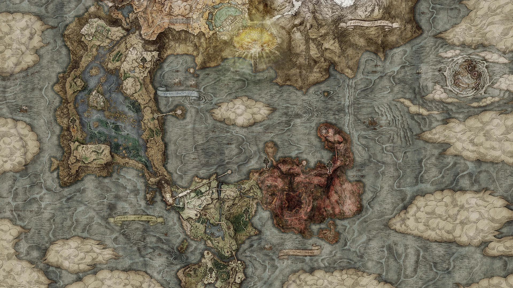

Necrolimbo: Fue antaño el corazón del poder de Marika. Sus llanuras están repletas de soldados caídos y espíritus que no encuentran descanso.
Caelid: Una plaga que lo ha convertido en una tierra de pesadilla con cielos rojizos y criaturas corrompidas.
Altus: La meseta donde los nobles mantienen sus fortalezas, presidida por la Capital Real de Leyndell.
Montaña de los Gigantes: Un páramo helado donde arden las llamas que un día consumieron el mundo.
Nokron y Nokstella: Las ciudades eternas bajo la tierra, construidas por una civilización olvidada.
Farum Azula: Una fortaleza en ruinas suspendida entre tormentas eternas.
